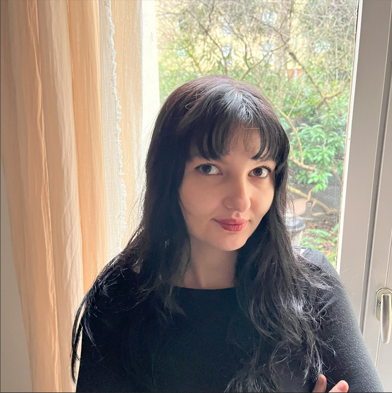
Currently a second-year Game Design student at ISART Digital, I approach game design as a natural extension of my lifelong passion for creativity and human connection.
My journey is unconventional: I first honed my discipline and attention to detail in the world of Artisanal Baking and Pastry, followed by studies in the hospitality industry.
Deeply inspired by adventure sagas like Uncharted and my extensive travels—from Africa and Asia to Scandinavia. I strive to infuse my projects with a sense of discovery and wonder, reflecting my love for cooperative gameplay and shared moments.
Unity & C#: Core engine and gameplay programming.
Web: HTML, CSS, JavaScript.
Visual Scripting: Prototyping and logic flow.
Creative: Photoshop, Premiere Pro, Capcut.
Organization: Excel, PowerPoint, Figma, Miro.
Methodology: Level Design, System Design, Playtest analysis.
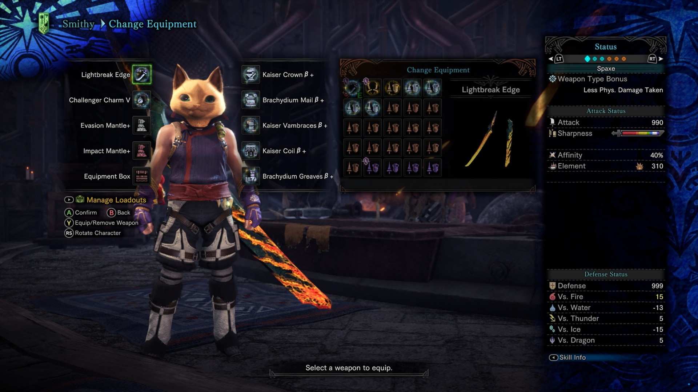
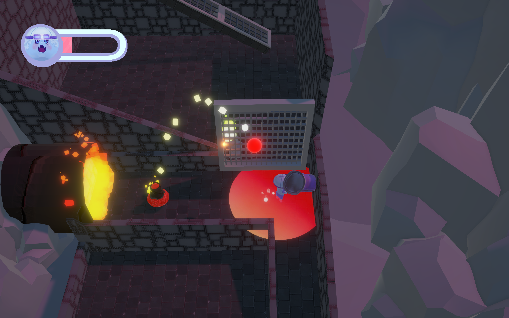
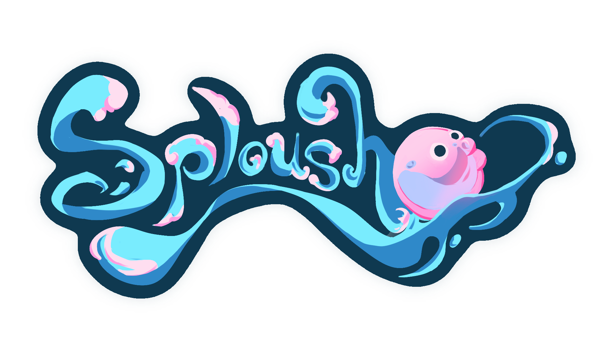

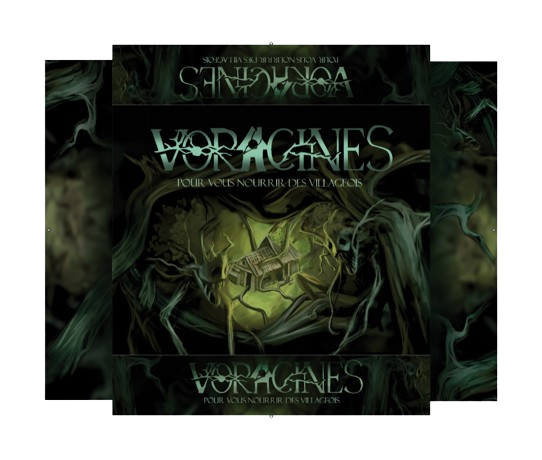
How do you modernize one of gaming’s most complex menu systems without losing its soul?
This collaborative project dives deep into information architecture and visual hierarchy.
We identified key pain points in the current user flow and proposed a complete UI redesign aimed at reducing cognitive load and enhancing accessibility for both veterans and newcomers.
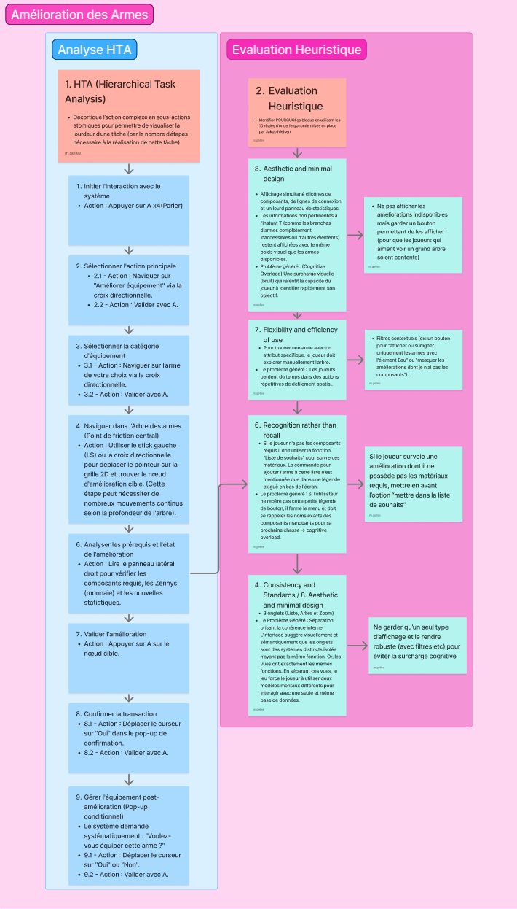
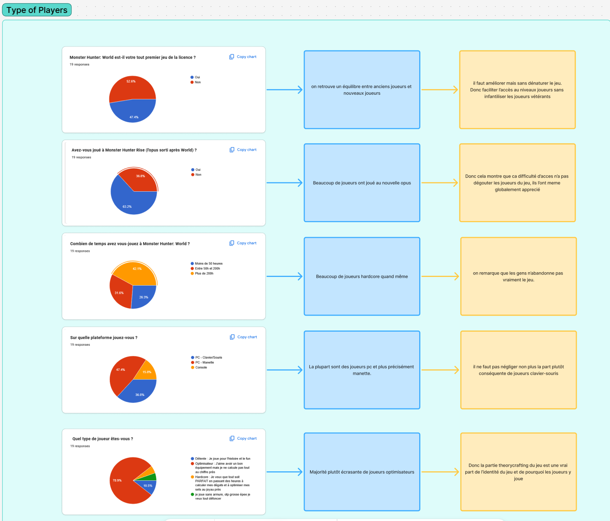
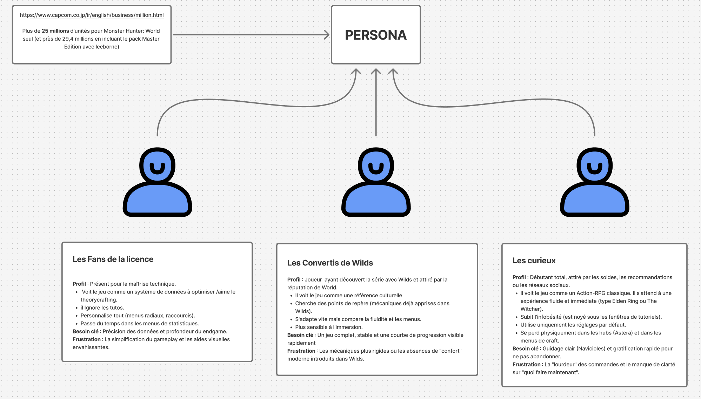
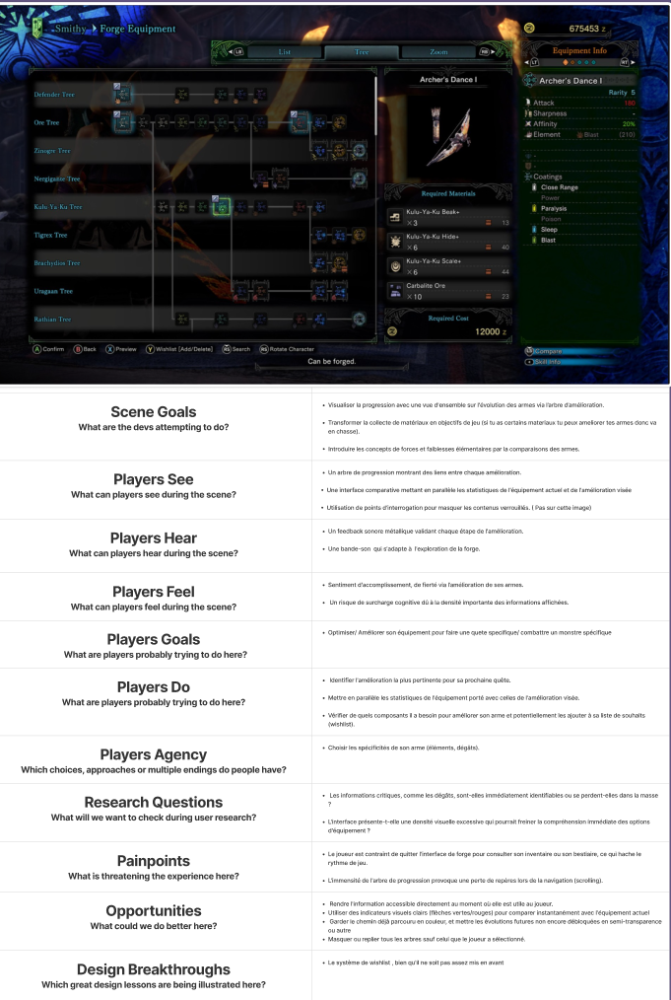
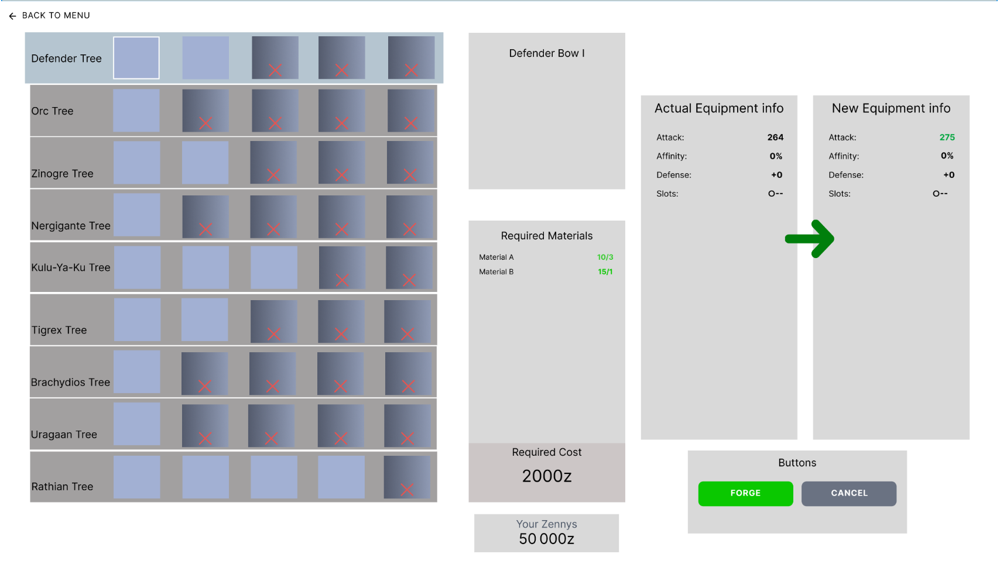
Immersive Analysis & Data Gathering
My primary focus was to bridge the gap between player frustration and design solutions.
After immersing myself in the game for several hours to identify its core complexities, I designed and deployed a comprehensive user survey.
I took care to craft questions with a neutral tone to eliminate bias and ensure the integrity of the data, focusing specifically on friction points within the HUD, navigation menus, and combat feedback.
Defining the Audience
Leveraging the quantitative and qualitative results from this survey, combined with secondary research on player archetypes,I developed the project’s User Personas.
These personas became our "north star," allowing us to categorize different player profiles and tailor the UI overhaul to solve their specific pain points.
By grounding our strategy in these insights, I ensured that every design iteration was a direct response to a real-world user need.
Mapping the Experience
Building on the persona insights, I developed the User Journey Map to visualize the player's emotional arc and touchpoints during specific high-stakes tasks.
By pinpointing exactly where the "fun" was being interrupted by "friction," I could advocate for design changes that directly impact player retention and satisfaction.
Scientific Visual Audit
To provide an objective basis for our UI overhaul, I conducted a Cognitive Load Analysis on selected User Tasks.
This involved identifying information-heavy screens where the "visual noise" overwhelmed the player's ability to make quick decisions.
This analysis was the cornerstone of our final UI layout, ensuring we prioritized essential combat data while decluttering secondary information.
From Strategy to Structure: Wireframing
Once the friction points were identified, we translated our solutions into Low-Fidelity Wireframes. The goal was to reorganize the information architecture without the distraction of visuals.
We restructured the HUD elements to match the player’s natural visual flow, prioritizing survival data while decluttering secondary menus.
Interactive Prototyping in Figma
To validate our ideas, we built High-Fidelity interactive prototypes in Figma.
This allowed us to focus on the speed and responsiveness of the menus. We ensured that every action, from navigating the item pouch to swapping weapons, felt smooth and intuitive for the player.
Functionality & Accessibility
We also optimized the layout and font sizes to ensure the interface remained readable during intense combat.
These prototypes helped us simulate the final experience, ensuring the new UI was more functional and less intrusive while respecting the game's original logic.
In Make It Melt, you play as Marceline, a skilled blacksmith whose raw materials have unexpectedly come to life and escaped. As these sentient ores are too tough to be broken by force, you must chase them through various levels and use strategy to guide them into the right furnaces. Heat is your only weapon in this frantic quest to reclaim your workshop’s supplies.
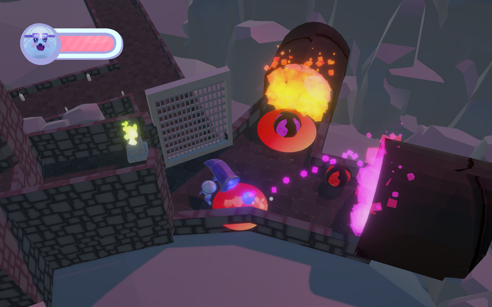
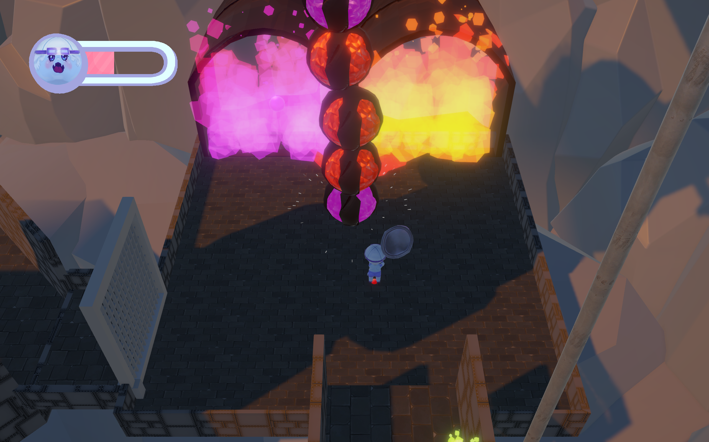
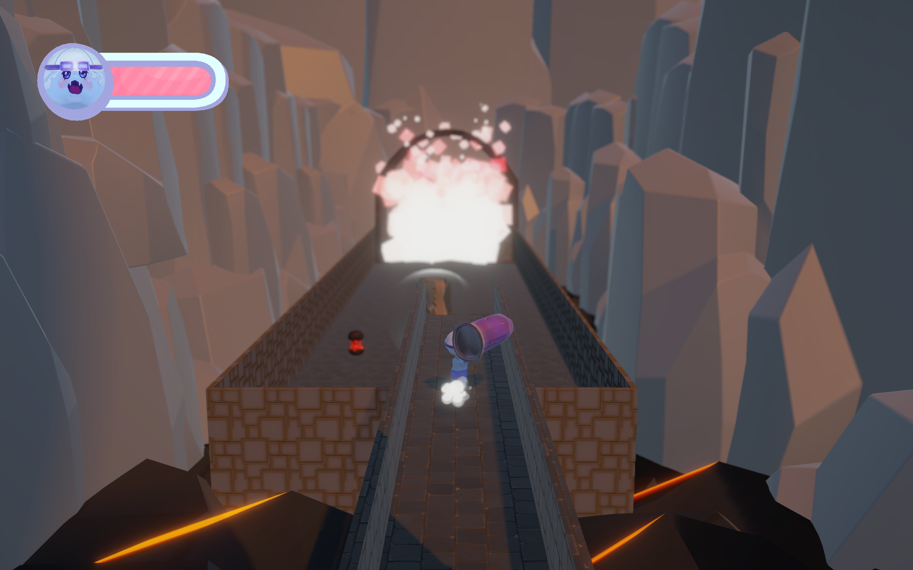
This project was developed by a team of five Game Designers.
Since we handled the entire programming process ourselves, we had to be pragmatic: we adapted our design goals to our technical capabilities to ensure a polished and functional core experience.
Our goal was to deconstruct the traditional idea of a brawler.
Inspired by billiard physics, we moved away from pure aggression to incorporate a tactical and reflective layer. Players must anticipate trajectories and calculate angles, making strategy just as vital as the combat itself.
While the Game Concept was a collaborative effort, I took full charge of the visual communication for our oral presentations. I designed and structured the PowerPoint decks, translating our collective ideas into a professional and impactful visual format to ensure our vision was effectively communicated during our pitches.
I co-managed the C# programming for this project using Unity.
My work focused on building the game's core architecture and ensuring a seamless player experience through three key areas:
Sloupsh is a curious slime living in a peaceful city.
But for him, life doesn't end at the edge of the local neighborhoods.
Convinced that a vast world awaits beyond, he sets off on a journey. His only means of travel? A natural ability to propel himself using powerful water jets.
In this 2.5D platformer, the city becomes a massive playground for vertical exploration. Your survival and progress depend entirely on how you manage your water levels. every multi-directional blast consumes a part of your internal reservoir.
Traverse the city from its deepest alleys to its highest peaks, and finally discover what lies beyond the walls.
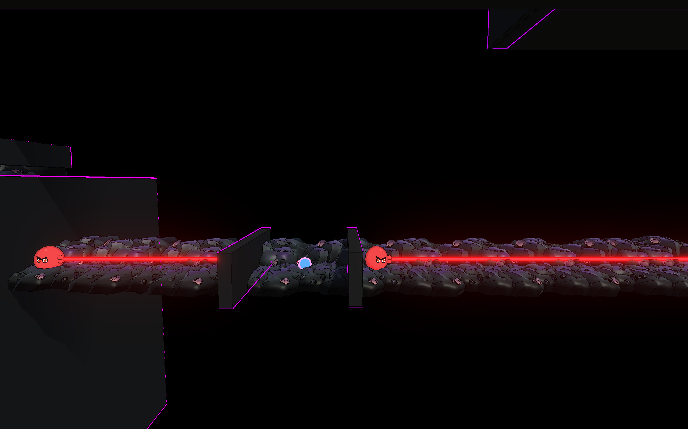
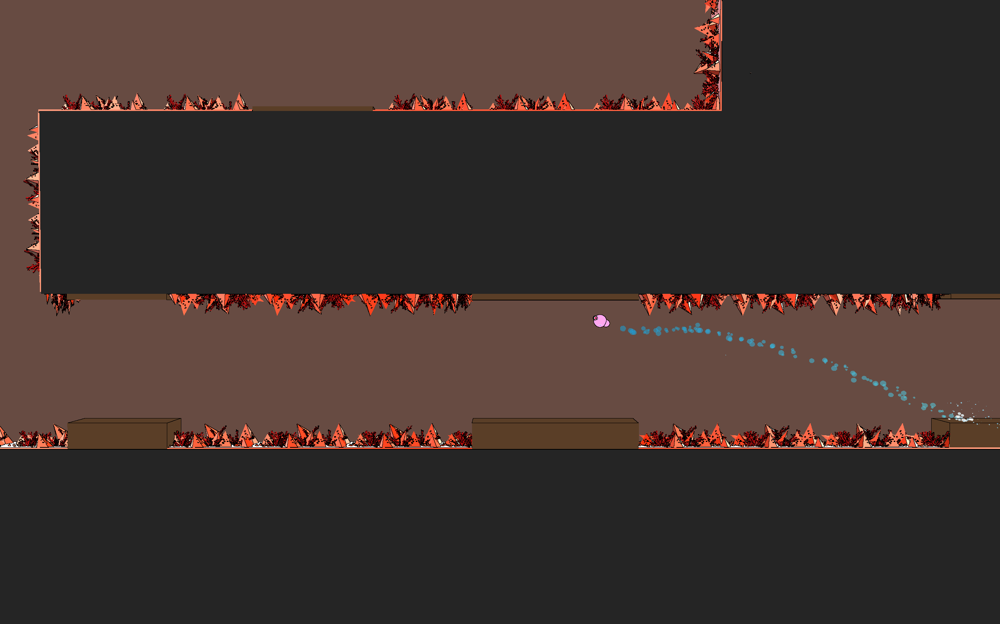
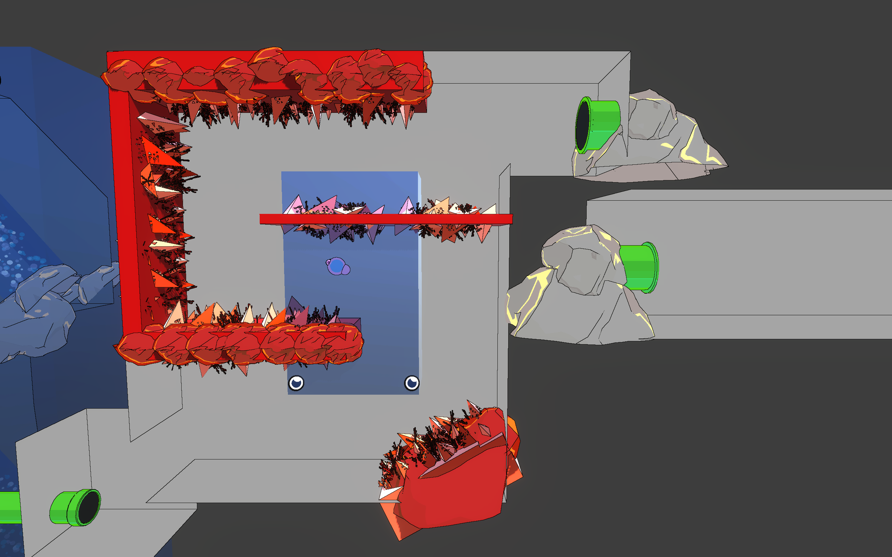
Sloupsh was developed as a cross-curriculum team project, bringing together five Game Designers, two Programmers, and one Sound Designer.
Our creative process was highly iterative, we originally envisioned a horror game centered on phobias, specifically aquaphobia but ultimately pivoted toward a lighter, 'goofy' atmosphere to better suit our vision of fun.
Despite this shift, we chose to keep water as our core element, transforming it from a source of fear into an atypical and dynamic propulsion system.
Throughout the development, we had to balance our creative ambitions with technical feasibility, carefully managing our time and collective skill sets.
To stay organized, we relied on industry-standard tools like Trello and Excel.
As a Game Designer, I played a key role in the project's foundation, actively contributing to the creation of the Game Concept Document and the design of the various pitch presentations to ensure a clear and compelling vision for the team.
Regarding the Level Design process, once the team finalized the core mechanics, I took full ownership of Level 3-The Nightclub.
My role was to define the visual identity and atmosphere of this environment while crafting the entire level layout.
My primary design goal was to introduce a new gameplay mechanic, lasers, which required a careful balance of the difficulty curve.
Since the game’s unique propulsion controls already presented a challenge, I focused on a progressive learning path.
I started with low-risk encounters to let players familiarize themselves with the lasers, then gradually increased the stakes.
By balancing the complexity of the new hazards with the existing movement difficulty, I ensured that the level remained challenging yet fair, guiding the player through a smooth and rewarding progression.
Cube Breaker is a one-button arcade game set in a vibrant neon universe. Master the power of fragmentation in an experience perfectly crafted for mobile gamers.
The core mechanic is simple yet deep: use a single tap to detonate your energy orb, splitting it into six smaller projectiles that blast outward in a lethal spray.
To shatter every cube on the screen, you must time your explosion at the perfect location to trigger the ultimate chain reaction.
Analyze the layout, find the sweet spot, and clear levels with the fewest attempts possible. In this world of neon and physics, precision is the key to total destruction.

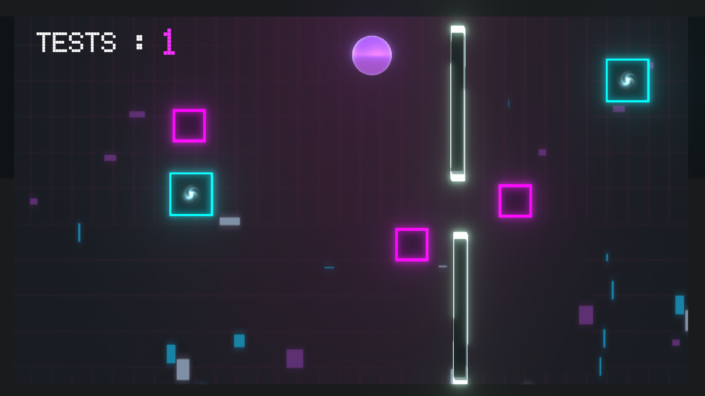
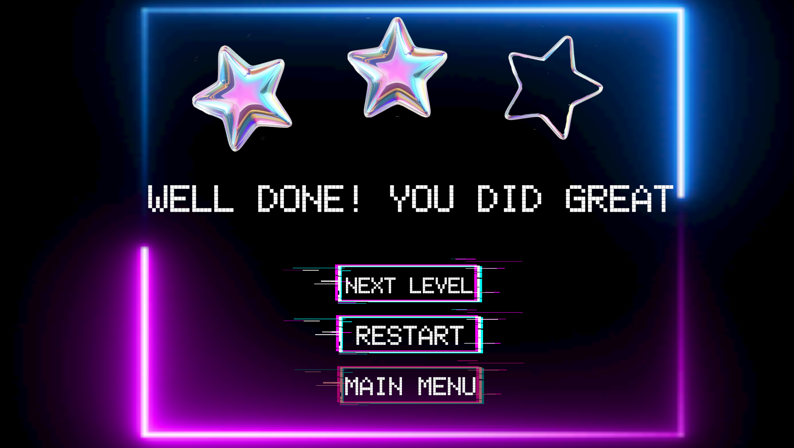
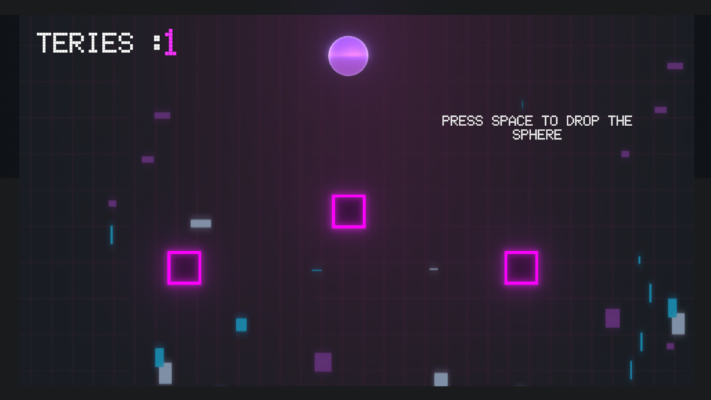
Cube Breaker is a solo project where I handled every aspect of production: Game Design, Programming, Level Design, and Game Feel.
The Core Constraint: One-Button Gameplay The primary challenge was to design a complete experience using only a single input.
This constraint immediately led me to the mobile platform, as "one-button" mechanics perfectly suit the intuitive nature of smartphone gaming.
From a programming perspective, I focused on technical feasibility while ensuring deep, engaging gameplay.
I drew my main inspirations from the physics-based puzzles of Cut the Rope and the precision of Pinball. Combined with my passion for neon aesthetics, I aimed to create a vibrant experience specifically tailored for casual gamers.
The Iterative Design Process The project went through several iterations, starting with a comprehensive Game Concept Document (GCD).
During the prototyping phase, a major design shift occurred: I implemented a ball that moves continuously from right to left. This decision was crucial as it gave the player the power to choose their strategy with millimeter precision, transforming a simple click into a calculated tactical explosion
On the technical side, I developed the game using Unity’s Visual Scripting, focusing heavily on the robustness of the core mechanics.
A significant portion of the programming was dedicated to the ball’s fragmentation system, ensuring the trajectory of the six sub-projectiles felt natural while preventing technical issues like infinite bouncing loops.
I also programmed a variety of specialized cube behaviors, such as teleportation and shrinking, to keep the level design diverse and challenging.
Finally, I placed a major emphasis on Game Feel, which is essential for a casual mobile experience.
I implemented several 'juice' elements, including screen shakes, custom shaders, and polished particle effects, to make every explosion feel impactful and rewarding for the player.
Regarding the Level Design, my goal was to create a seamless onboarding experience through organic tutorialization.
I designed the initial stages to let players discover the explosion mechanic and the victory conditions naturally, without the need for intrusive text.
New elements, such as special-effect cubes, are introduced progressively to keep the learning curve smooth.
As the player advances, the number of targets increases, and the layouts become more complex to maintain a steady challenge.
However, I intentionally avoided a punitive design; the game encourages a 'relaxing yet engaging' flow where the player decides whether to restart a level to improve their score.
This non-mandatory retry system ensures that the experience remains accessible and stress-free, staying true to the casual mobile gaming philosophy.
In Voracines, players step into the twisted bark of malevolent, ancient trees fueled by an insatiable hunger for human life force.
Set in a world of suffocating darkness, your goal is to expand your corrupt root system across the board to ensnare and devour villagers before your competitors can claim them.
Strategy is at the heart of the forest: you must carefully manage your growth, outmaneuver rival roots, and strategically choke the land to satiate your eternal hunger.
In this grim competition, only the most ruthless predator will dominate the soil. Will you starve in the shadows.

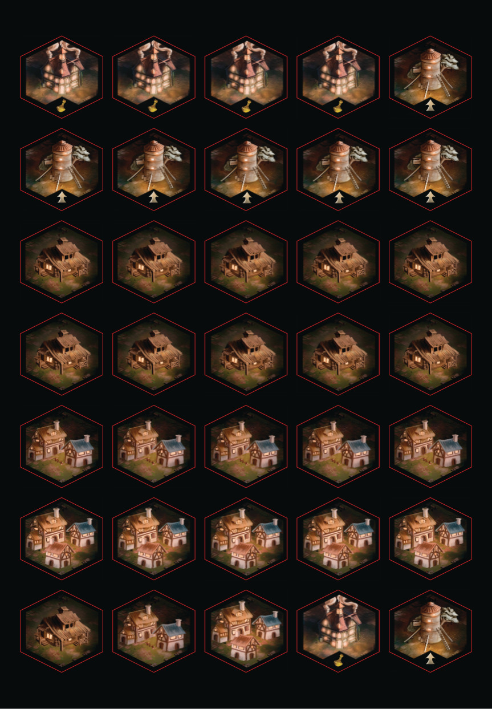
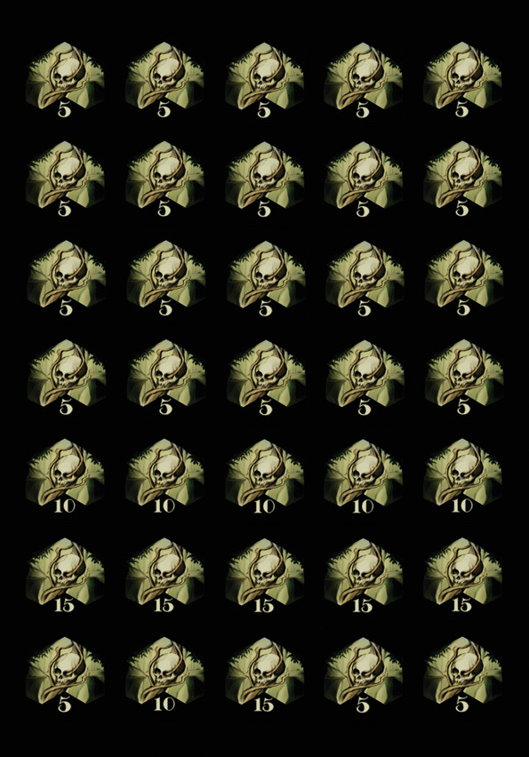
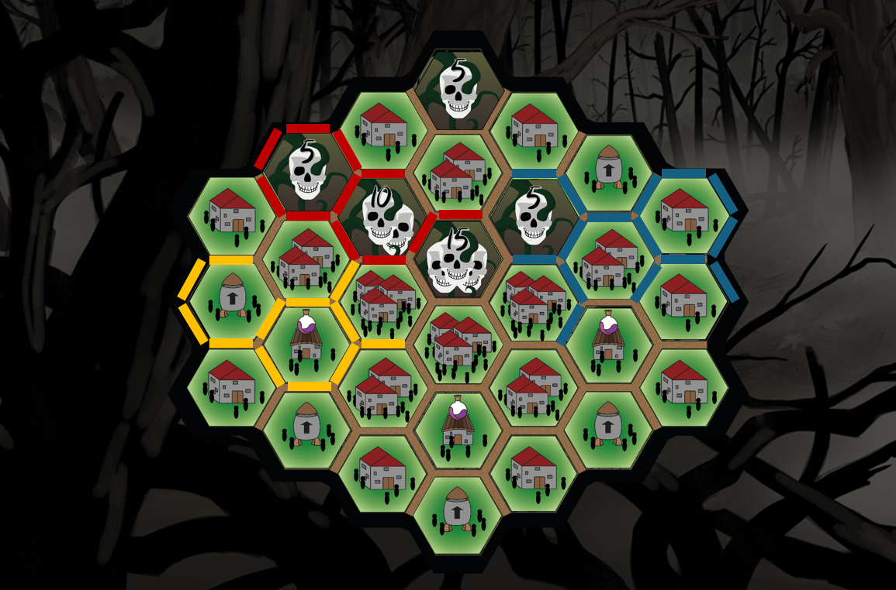
Voracines was developed by a collaborative team of six Game Designers and two Game Artists with a clear objective: to create a deep, strategic territory-expansion game.
Our creative process began with extensive research and playtesting of existing board games to identify the most engaging mechanics.
From this exploration, the concept of predatory nature emerged, leading us to our signature 'root expansion' system.
One of our primary design challenges was solving the common issue of player downtime. Through numerous iterations, we focused on keeping the experience engaging for everyone, ensuring that players remain active and invested even when it isn't their turn.
Throughout the project, I was responsible for the organizational workflow, utilizing Excel to manage data and scheduling.
I also headed the playtesting phase, creating and analyzing Google Forms to gather player feedback for balancing.
Finally, I managed the visual presentation of the project, designing the PowerPoint materials to pitch our vision effectively to the jury.